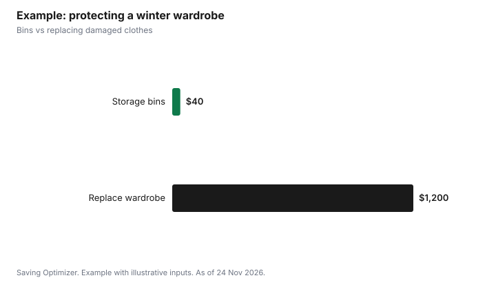

Clothing · Canada
Storing Seasonal Clothes: Preventing Moths, Mildew and Damage

To keep seasonal clothes from being ruined by moths, mildew or creases, wash or clean everything first, store it somewhere cool and dry, and check it twice a year. If you find moths, the Canadian Conservation Institute says freezing works: seal the item in a plastic bag and keep it below −20°C for at least a week.
Key takeaways
- Clean everything before storing; pests go for body oils and stains.
- Store in a cool, dry place, not a damp basement.
- Keep humidity below 65% to avoid mould (CCI, checked 24 Nov 2026).
- Moths: seal in plastic and freeze below −20°C for a week.
- Store down loosely, not compressed.
Containers and where to store
| Option | Good for | Watch out for |
|---|---|---|
| Sealed plastic bins | Wool, against moths | Make sure items are fully dry first |
| Cotton garment bags | Coats on hangers | Not moth-proof on their own |
| Vacuum bags | Bulky synthetics | Don't compress down or wool long-term |
| Closet shelf or under the bed | Most items | Avoid damp basements and hot attics |
Preventing moths and mildew
- Wash or dry-clean wool before storing.
- Store only completely dry clothes.
- Use a dehumidifier in damp spaces.
- Check stored clothes in spring and fall.
- Freeze any item with signs of moths before storing it with others.

What's at stake: an example
Example: a winter wardrobe of a wool coat, sweaters and a down jacket worth $1,200 can be protected with a few bins for an example $40.
See making clothes last, winter coat cost per wear and dry cleaning vs home care.
Sources
- Canadian Conservation Institute, Controlling insect pests with low temperature (CCI Notes 3/3), checked 24 Nov 2026.
- Canadian Conservation Institute, Caring for textiles and costumes, checked 24 Nov 2026.
Frequently asked questions
How do I stop moths in stored clothes?
Clean clothes first, store wool sealed, and check twice a year.
Does freezing kill clothes moths?
Yes. The Canadian Conservation Institute suggests sealing items and freezing below −20°C for at least a week.
Should I use vacuum bags for winter clothes?
They're fine for synthetics, but don't compress down or wool for long periods.
Where should I store seasonal clothes?
Somewhere cool and dry, not a damp basement or hot attic.
How do I prevent mildew?
Store only dry clothes, and keep humidity below about 65%.
Researched and drafted with AI assistance and fact-checked against official Canadian sources. How we create content.
Note: Amounts are examples. Education only.